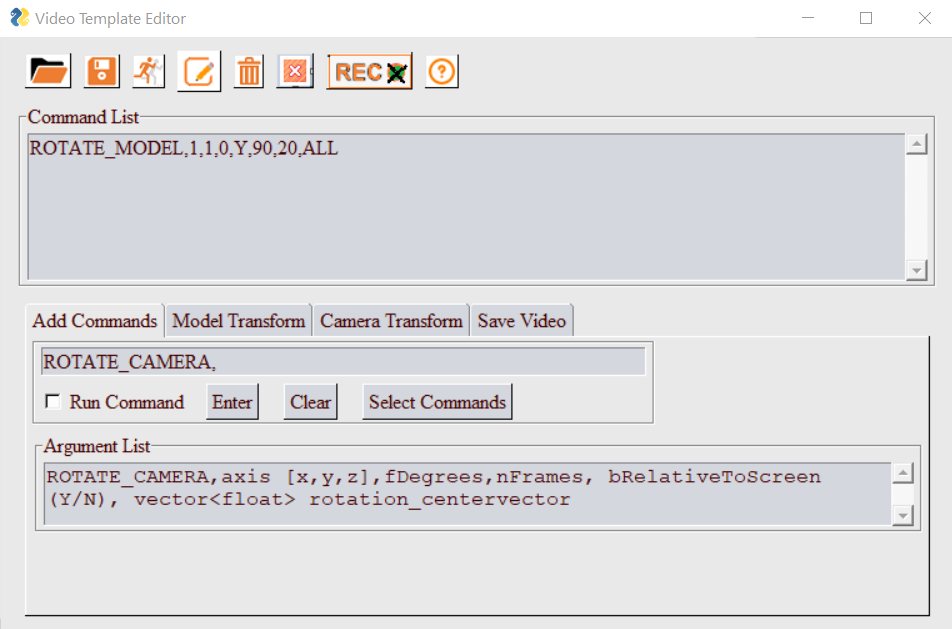
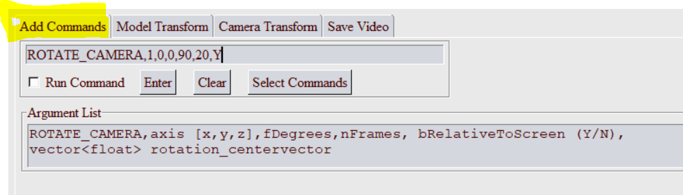
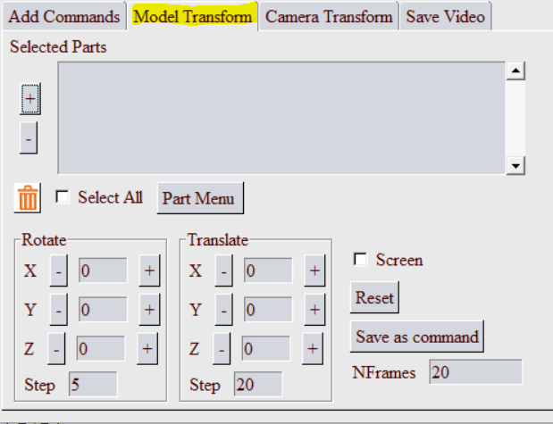
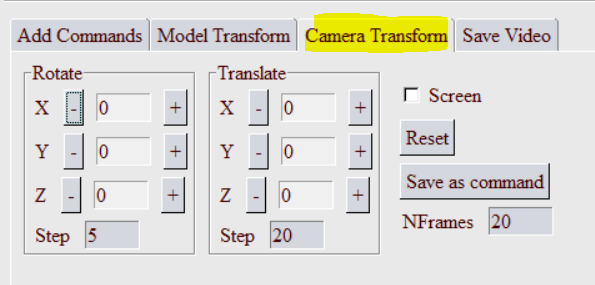

Video Template Editor GUI
To open the GUI, select the submenu Video Maker from PY_Tools main menu of VCollab Pro or ProX.
Command List
Current list of commands in the template. User can Add, Modify, Run or Save these commands.
Menu
 File Open: Select a video template file (A file selection dialog will popup). The commands from this file will be added to the Command List.
File Open: Select a video template file (A file selection dialog will popup). The commands from this file will be added to the Command List.- Save File: Save all commands defined in the Command List as a video template file.
- Run Commands: Run all commands in the Command List.

 Edit Commands: This is a toggle button. When green, user can directly edit the commands in the Command List.
Edit Commands: This is a toggle button. When green, user can directly edit the commands in the Command List. Clear All: Clear all commands from the Command List.
Clear All: Clear all commands from the Command List.
 Record Images: Toggle button to set image capturing ON/OFF. When this is in ON mode, Images will be captured into a temporary folder. Save command will create video from these images.
Record Images: Toggle button to set image capturing ON/OFF. When this is in ON mode, Images will be captured into a temporary folder. Save command will create video from these images. Exit: Close this dialog and exit.
Exit: Close this dialog and exit. Help: Show this help message in a browser tab.
Help: Show this help message in a browser tab.
Add Commands
User can define a new command in this text filed. This command can be added to the Command list.
- Argument List: When user enters a valid command, a list of parameters that can be specified for the command will be displayed in this text box.
- Run Command: If this checkbox is ON, command will be run before entering into the Command List.
- Enter: Click this button to add the command in the text filed to the Command List.
- Clear: Click this button to clear current command in the text field.
- Select Commands: Click this button to select a command from the Tree View (as shown below).
When a new command is selected/edited in text filed, corresponding argument list will be displayed in the Argument List text box.
Model Transform
User can define a set of Model/Part transformation (rotate and move) commands using GUI.
- Select few parts from screen and use +/- buttons to rotate or translate the selected parts.
- Selected parts will be displayed in the Selected Parts list box.
- Use Part Menu to select any parts from a listbox.
- Screen toggle can be used to define axis in Screen/Camera cordinate system.
- Save as Command will save all the model movement commands.
- NFrames will be used as number of frames.
Camera Transform
User can define a set of Camera transform commands (rotate and move) in this GUI.
- Use +/- buttons to rotate or translate the camera.
- Screen toggle can be used to define axis in Screen/Camera cordinate system.
- Save as Command will save all the camera movement commands.
- NFrames will be used as number of frames.
Save Video
User can Save a video file from this tab.
- When the Record Images button is ON, the recorded images will be saved in a temperory folder and the Number of Images Saved will be updated.
- Reset Capture will reset the captured images.
- User can Browse to the folder and set the video file name. Currently supported formats are: MP4, GIF, AVI, FLV, and WMV.
- Save will stitch all the captured images together and save them as the video file.
Example
Here is a sample command template file:
#-- VPANIM_PARAMS,nFrame_VP2VP,nImgsPerView=1,iSectionAnimFrames,iExplodeAnimFrames
VPANIM_PARAMS,25,2,25,25
#-- VPANIM_CAEPARAMS,bCAEAnim(Y/N),nCylesPerView,nFramesPerCyle,nImgsPerCAEFrame
VPANIM_CAEPARAMS,Y,4,24,1
#-- Select ViewPoint 1
APPLY_VP,1
VP2VP_ANIM,1,3
MOVE_CAMERA,300,100,0,30,Y
ROTATE_CAMERA,1,0,0,90,30,Y
SAVE_VIDEO,Test123.mp4,0
EXIT
Note
Commands will be excecuted line by line. Any text after '#' is a comment.